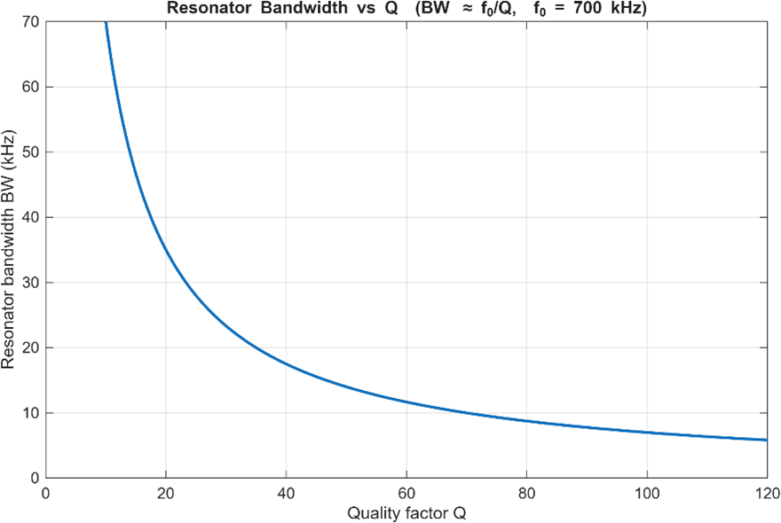
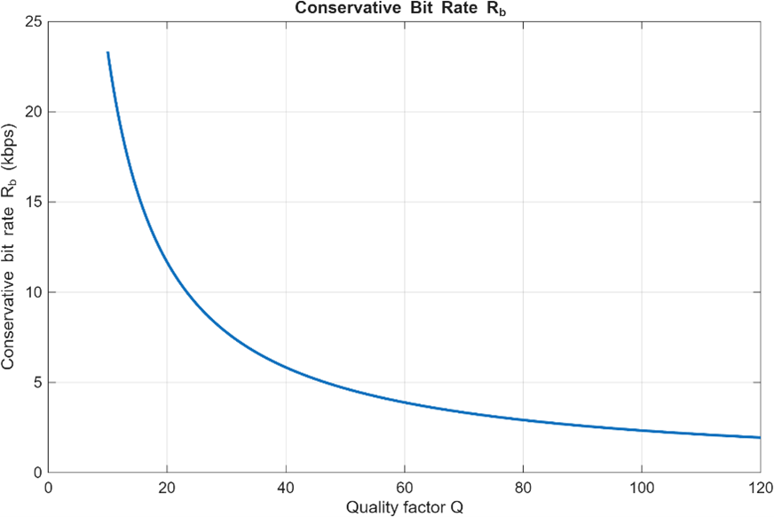
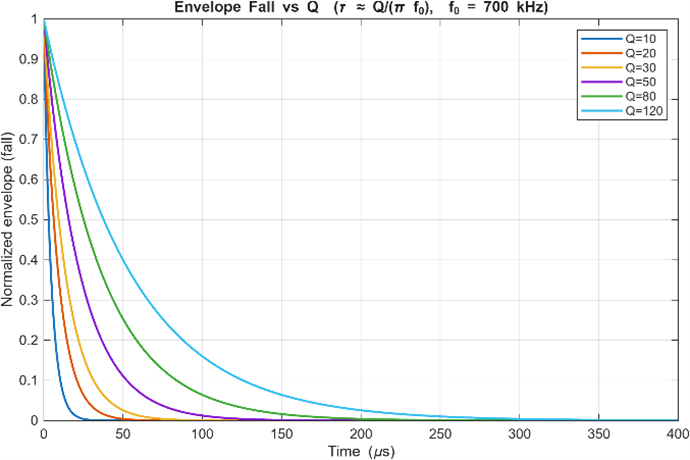
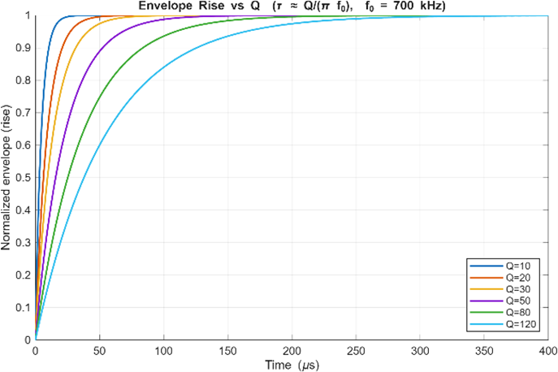
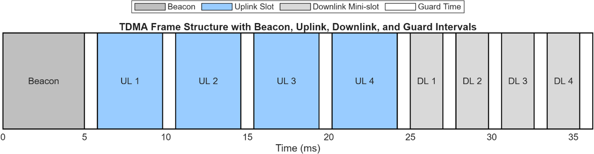
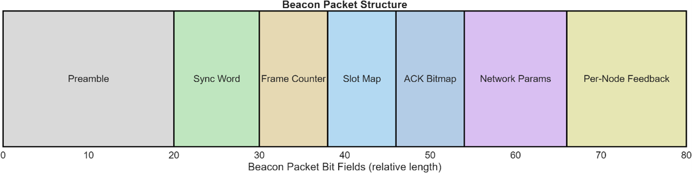

System Overview
The goal of this project was to design a small multiuser communication network using magnetic near-field coupling rather than radiating antennas. A central node coordinates communication with up to eight end nodes, targeting reliable transfer of text and simple images over 1–3 metres using entirely discrete components on a custom PCB — no off-the-shelf radio modules.
Figure 1 shows the end-to-end signal chain. Digital functions — packet formation, buffering, DMA, and TDMA scheduling — interface to the physical layer through a digitally controlled oscillator (DCO) carrier, an envelope/ASK gate, a switching current driver, and a tuned LC coil. On the receive side, the magnetically coupled signal passes through an envelope detector, low-pass filter, and baseband amplifier before being digitised by an external SPI ADC. A sense coil provides an independent measurement point for calibration.

Why Magnetic Coupling — and Why 1 MHz
At a carrier frequency of 1 MHz the free-space wavelength is approximately 300 m. The near-field boundary — defined by r ≪ λ/2π — lies around 50 m, well beyond the 1–3 m target range. This means the system operates entirely inside the magnetic near field, where the dominant coupling mechanism is mutual inductive coupling between resonant coils, not radiation.
A conventional antenna at 1 MHz would be electrically tiny (physical size ≪ λ), resulting in extremely low radiation resistance and negligible efficiency. Classical far-field link budgets do not apply here: received signal strength depends on coil geometry, orientation, separation distance, and resonant tuning rather than antenna gain and transmitted power. This is not a shortcoming but an intentional design choice — near-field confinement limits the useful communication range, reducing inter-cell interference and making eavesdropping from outside the room physically difficult.
The 1 MHz frequency was also chosen for practical engineering reasons: at this frequency discrete lumped components (coils wound by hand, standard capacitors) behave predictably, PCB layout and routing are straightforward, and standard laboratory oscilloscopes and spectrum analysers can be used directly for debugging without specialised RF instrumentation.
PHY Layer — Resonant LC Channel
Resonant Coil as Channel, Filter, and Energy Store
Each node is built around a tuned LC resonator whose resonant frequency is set to the network carrier frequency fnet. The resonator serves three simultaneous roles: it is the coupling element (coil current generates the magnetic field), a narrow band-pass filter (attenuating out-of-band interference and harmonics from the square-wave driver), and an energy store that shapes transmitted envelope transitions.
The LC tank resonant frequency is f0 = 1/(2π√LC). The effective bandwidth of the resonator is BW ≈ f0/Q, where Q is the quality factor. A higher Q gives a narrower pass-band, better harmonic rejection, and higher received signal amplitude — but at the cost of slower envelope response and lower achievable symbol rate.

This bandwidth–selectivity trade-off directly constrains the achievable symbol rate. A conservative design guideline requires the bit rate to remain well below the resonator bandwidth to avoid inter-symbol interference from envelope distortion. Figure 3 shows the resulting conservative bit rate estimate Rb ≲ BW/3 as a function of Q. Together, Figs. 2 and 3 motivate the choice of moderate Q values in this system — balancing spectral cleanliness, transient response, and practical data throughput.

Envelope Rise and Fall — The Q–Bit-Rate Trade-off in the Time Domain
When the carrier is gated on or off for OOK modulation, the resonant LC tank does not respond instantaneously. The stored energy builds up or decays with a time constant approximately
A higher Q therefore means longer rise and fall times of the carrier envelope. If the symbol period becomes comparable to τ, amplitude levels never reach their steady-state values and detection margin collapses. This is the time-domain counterpart of the bandwidth argument above. Figures 4 and 5 illustrate the envelope fall and rise responses for several Q values at f0 = 700 kHz: at Q = 120 the settling time exceeds 300 μs, whereas at Q = 10 it is under 30 μs.


Push-Pull Switching Current Driver
The transmitter power stage uses a push-pull topology with two N-channel MOSFETs driven by a dual-channel gate driver. The gate driver translates the logic-level DCO output into complementary high-current switching signals, alternately driving the resonant LC tank in opposite directions. This symmetric excitation efficiently utilises the supply voltage, minimises even-order distortion, and maximises coil current for a given supply. End nodes operate from 5 V, targeting peak coil currents around 0.5 A; the central node uses 12 V and drives 1–2 A peak to improve link margin and synchronisation reliability.
The carrier is generated by a digitally controlled oscillator (DCO) implemented with an MCU timer peripheral toggling at the desired frequency. Frequency tuning is accomplished by adjusting the timer reload value: fDCO = fclk / 2N. Although the raw DCO output is a square wave containing odd harmonics (f0, 3f0, 5f0, …), the resonant LC tank strongly attenuates these, so the coil current is approximately sinusoidal at fnet.
ASK/OOK modulation is applied by gating the DCO output through a voltage-controlled gain stage (VCG) whose amplitude is set by an external SPI DAC. This allows a small number of discrete, repeatable amplitude levels rather than continuous analog control, simplifying calibration and improving reproducibility across nodes.
Envelope Detector and ADC Front-End
At the receiver, the magnetically filtered signal at the LC tank output is rectified by a Schottky diode envelope detector (Schottky chosen for its low forward voltage drop and better sensitivity at small amplitudes). A low-pass filter removes residual carrier-frequency ripple, yielding a smooth baseband envelope. A baseband amplifier then scales this signal to match the ADC full-scale range. Importantly, amplification is placed after the LPF rather than before it, preventing RF ripple amplification and avoiding ADC saturation. An external SPI ADC provides better resolution, lower noise, and more deterministic timing than an MCU's internal converter — important for adaptive calibration and received signal strength indication (RSSI) measurement.
MAC Layer — Beaconed TDMA
Because all nodes share a single magnetic channel (there is no spatial separation at these distances), multiple access requires time-division. The MAC layer uses a beaconed TDMA scheme: a master node broadcasts a periodic beacon frame that synchronises all slaves. Each slave is pre-assigned both an uplink slot (slave transmits to master) and a downlink mini-slot (master transmits to slave); transmission outside the assigned window is forbidden by protocol. Guard intervals between slots absorb clock drift and beacon detection jitter.

Synchronisation is achieved through the beacon: all slaves reset their slot counter upon detecting the beacon preamble. A slave that misses two consecutive beacons enters a listen-only mode and attempts re-synchronisation, preventing rogue transmissions from corrupting other nodes' slots. The join/leave procedure allows nodes to dynamically enter or exit the network without disrupting ongoing communication.
Beacon Packet Structure
The beacon frame carries all the information a slave needs to (re-)synchronise and operate correctly within its assigned window. As shown in Fig. 7, the packet fields are: a Preamble for timing recovery and carrier detection; a Sync Word for frame boundary alignment; a Frame Counter for sequence numbering; a Slot Map encoding which slots are assigned; an ACK Bitmap confirming receipt of uplink packets from the previous frame; Network Parameters carrying frequency offset and gain corrections; and a Per-Node Feedback field with link quality and retransmission instructions.

Calibration and Self-Tuning
Component tolerances, parasitic capacitances, temperature variation, and environmental loading all cause resonant frequency drift between nodes. If transmitter and receiver resonances are misaligned, coupling efficiency drops sharply. The system addresses this through a three-stage calibration sequence. On startup, the central node performs an idle-channel scan, sweeping the DCO across a small frequency range to identify the quietest operating point. It then broadcasts a long pilot tone; each end node adjusts its tuning capacitance to maximise received envelope amplitude. Finally, during steady-state TDMA operation, the ACK bitmap and RSSI feedback in each beacon provide continuous fine-correction cues, keeping all nodes locked near network resonance without requiring a dedicated calibration master clock.
MATLAB Simulation
A supporting MATLAB simulation suite was developed alongside the hardware design. Simtool.m models the resonant LC channel, computing envelope rise/fall time constants, bandwidth, and achievable bit rate as functions of quality factor (Figs. 2–5 above). figtool_0.m generates the TDMA frame timing diagram (Fig. 6), with configurable beacon duration, uplink and downlink slot widths, number of nodes, and guard intervals. figtool_1.m produces the beacon packet structure diagram (Fig. 7). These tools were used to validate timing budget calculations and explore the Q-factor design space before hardware implementation.